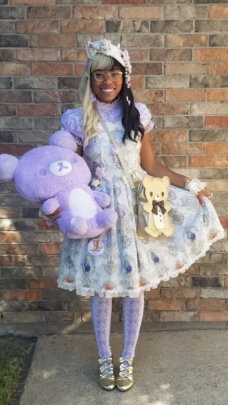
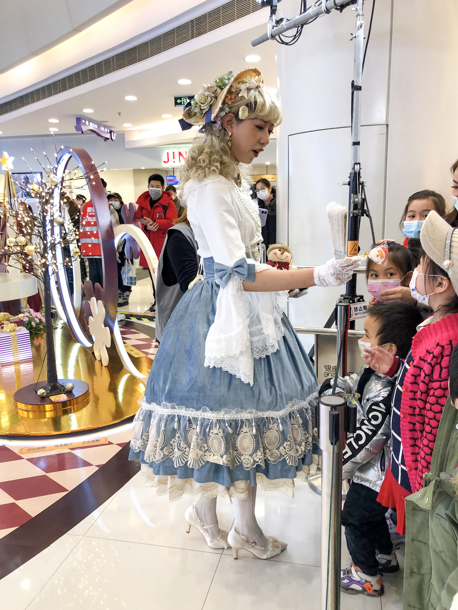
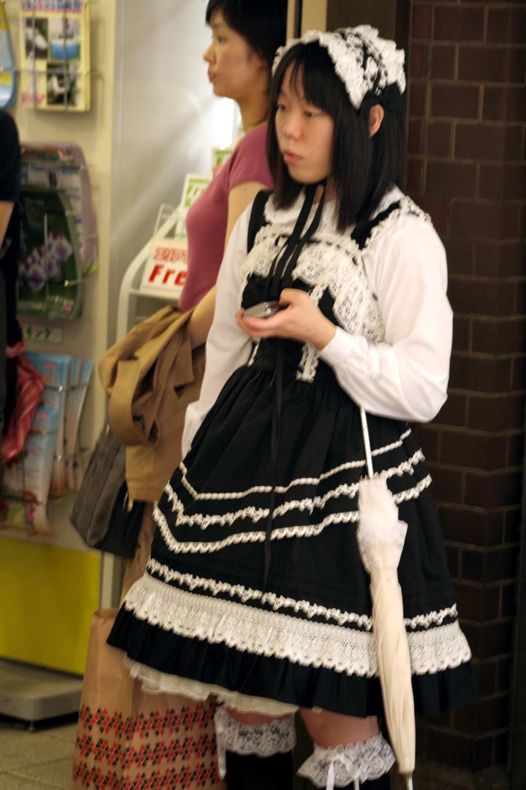

Lolita fashion is a prominent Japanese street fashion that grew in popularity in the 1990s. In more recent years, however, it has spread around the globe and has a following worldwide. The fashion is characterized by a bell-shaped or A-line silhouette, specific dress cuts, and a balanced coord (short for coordinated outfit, it refers to a fully assembled outfit in j-fashion). Lolita fashion follows a certain set of guidelines that dictate whether something is "lolita" or not, as the fashion is one of the strictest. Lolita has many different substyles, and each substyle has varying rules on what is acceptable, but most of the same principles still apply. The petticoat and skirt length are arguably the most important elements, as they provide the foundation for the silhouette. However, other factors are just as important in order to encapsulate the overall look. Lolita fashion is not a costume, and for those who engage in it, it's often quite offensive to refer to it as such.
Lolita fashion is heavily inspired by European Victorian and Rococo fashion. Additionally, the fashion's exact origins are unclear. Some theories suggest that dolly kei and other similar alternative styles from the late 1970s and early 1980s helped shape the development of what lolita fashion would later become, but these are just speculations. It is also said that it took root in Tokyo's Harajuku district and parts of Osaka as a form of youth rebellion. Nevertheless, lolita fashion became a recognizable and distinct style by the 1990s. It has since diminished quite a bit in popularity in Japan, due to new trends and the rise of fast fashion and genderless fashion. Despite this, Lolita fashion still maintains a dedicated following.
Lolita has a variety of substyles, each unique in their own way.
However, it consists of three main substyles:

Image from:Wikimedia Commons

Image from:Wikimedia Commons

Image from:Wikimedia Commons
These define the fashion for the most part, but again, there are more substyles.
Notable examples of other substyles include:
To get the fashion, you can buy from established brands, more niche shops on Taobao and other platforms, or even make your own clothing.
Some notable brands and shops include, but are not limited to: